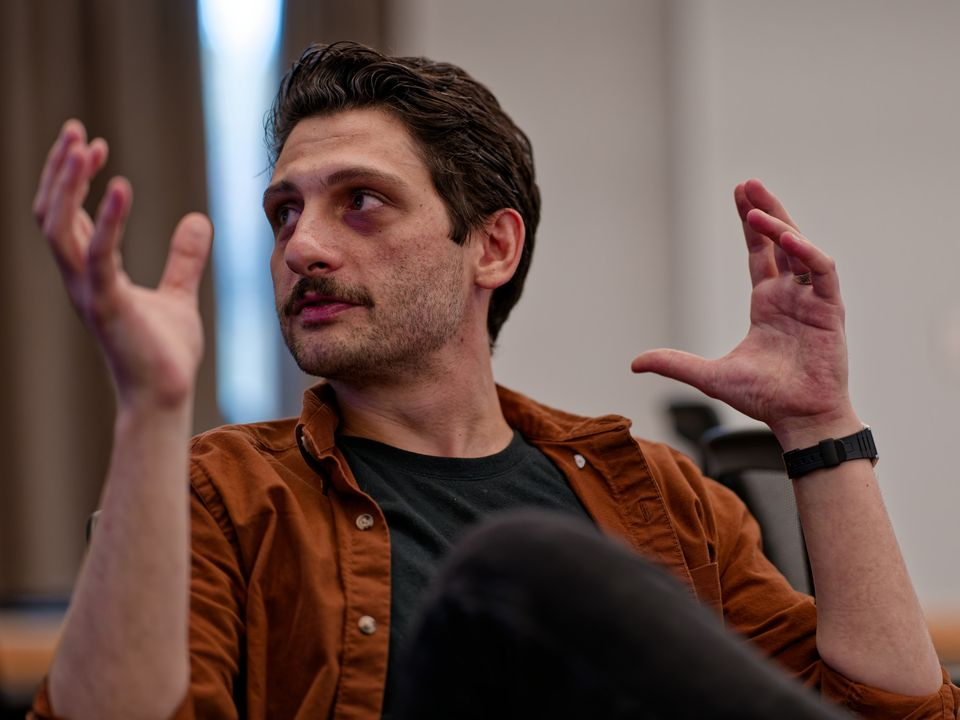

Teaching

“This class reminds me why I love to learn.”
Student feedback
I teach Logic, Ethics, and Introduction to Philosophy at the Community College of Denver. I build free interactive web apps for my courses, and I post teaching videos on YouTube.
Apps
Each app runs in the browser with nothing to install, and each is free to use in any course.
Logic
Proofs
A natural deduction proof assistant for propositional logic, and the backbone of my logic course. Guided mode teaches students how to decide which rule to use, and free mode teaches them how to use it.
Truth Tables
A sandbox for analyzing statements with truth tables, a core part of propositional logic.
Formal Language
Several visualizations of the syntax of a formal language.
Conditional Countdown
A timed game: derive the target from the tiles before the fuse burns down. Every target you derive adds time, and longer derivations add more.
Scientific reasoning
Theory Selection Suite
Interactive experiments on evaluating competing theories: identify a hidden creature by elimination, design controlled experiments in a garden, and diagnose an outbreak through targeted testing.
Falsification Lab
Run experiments to refute rival theories of a hidden rule, propose theories of your own, and see that the theories that survive are still unproven.
Probability
Probability Basics
The core ideas of probability, shown in several settings.
Bayes’ Rule Visualizer
How Bayes’ rule updates beliefs on evidence, shown without the formulas.
Data literacy
Data Visualizer
How mean, variance, and correlation determine the shape of data, without the technical jargon.
Clustering Comparison
K-means, Gaussian mixture modeling, and density-based clustering compared on the same data in real time.
Teaching with AI
Materials for faculty, from my courses and workshops.
- OverviewWhy these materials, and what’s here
- The AI contractTemplate and instructions
- Logic and Ethics examplesTwo courses side by side
- Case sorterFor faculty meetings
- WorkshopsOutlines
Assignments
Instructions for the major assignments in my courses.
- Paper instructionsIntroduction to Philosophy
- Paper instructionsEthics
- Group project instructionsEthics
Fall 2026
Syllabi for this semester’s sections at CCD.
- LogicPHI 1013-700
- EthicsPHI 1012-001
- EthicsPHI 1012-003
- EthicsPHI 1012-70L
- Introduction to PhilosophyPHI 1011-004
Courses taught
Community College of Denver
| Ethics | 13 sections, Fall 2024 to present |
| Introduction to Philosophy | 7 sections, Fall 2024 to present |
| Logic | 3 sections, Spring 2026 to present |
Front Range Community College
| Introduction to Philosophy | 5 sections, Summer 2024 to Spring 2025 |
| Logic | 2 sections, Fall 2024 and Spring 2025 |
| Ethics | Spring 2025 |
| Philosophy of Death and Dying | Fall 2024 |
Texas A&M University
| Introduction to Logic | Summers 2018, 2019, and 2021 |
| Introduction to Logic, teaching assistant | 21 sections, Fall 2017 to Fall 2020 |
| Introduction to Philosophy | 3 sections, Spring 2021 to Fall 2022 |
| Philosophy of Mind | Spring 2023 |
| Environmental Ethics, teaching assistant | Spring 2019 |